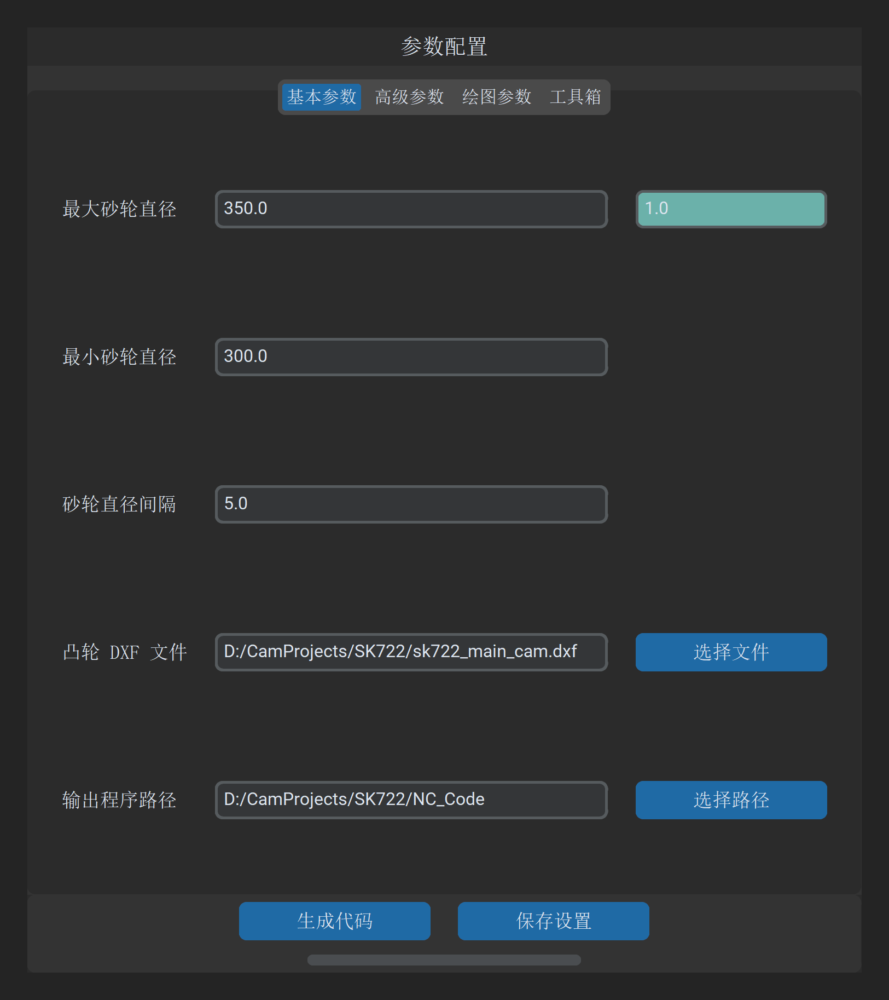

2.2 基本参数配置详解
一句话说明：设定砂轮直径变化范围、磨削补偿步距以及凸轮图纸与程序输出路径。

基本参数速查表
| 参数名称 | 默认值 / 单位 | 校验规则 | 作用与工程设置要点 |
|---|---|---|---|
最大砂轮直径 |
400.0 mm |
必须大于最小砂轮直径 | 新装砂轮或当前砂轮的初始磨损起始直径。 |
砂轮直径误差修正(输入框右侧青色区域) |
0.0 mm |
允许正负实数 | 直径误差快速修复值。 当数控系统记录的砂轮直径与现场实测直径存在固定系统偏差时，直接填入 [实际直径 - 系统设置直径]，无需更改系统变量即可消除轮廓形变误差。 |
最小砂轮直径 |
300.0 mm |
必须大于 0 | 砂轮允许使用的报废极限最小直径。 |
砂轮直径间隔 |
20.0 mm |
必须大于 0 | 砂轮修整补偿的步距。系统将以该步距在最大至最小直径区间内依次生成多段加工程序。粗加工可设 1.0~5.0 mm，精密加工通常设 0.1~0.5 mm。 |
凸轮 DXF 文件 |
空 (必填) | 必须为有效 .dxf 文件 |
导入待加工的闭合理论凸轮轮廓图纸。 |
输出程序路径 |
空 (必填) | 必须为有效文件夹路径 | 指定生成的 CNC 代码及辅助图表的存放目录。 |
标准操作步骤
- 设置砂轮直径范围：
- 根据当前砂轮规格，填入
最大砂轮直径（如400.0）与最小砂轮直径（如390.0）。 - 根据加工精度等级设置
砂轮直径间隔（精密凸轮建议设为0.2或0.5mm）。
- 根据当前砂轮规格，填入
- 选择凸轮 DXF 图纸：
- 点击
凸轮 DXF 文件旁的选择文件，载入 CAD 轮廓。
- 点击
- 指定输出目录：
- 点击
输出程序路径旁的选择路径，指定目标保存文件夹。
- 点击
- 持久化保存与生成：
- 点击
保存设置，将参数保存到本地配置。 - 点击
生成代码，启动多核后台代码生成。
- 点击
[!IMPORTANT] 输入校验约束 若
最大砂轮直径小于或等于最小砂轮直径，点击生成时系统将弹出警告对话框：“最大砂轮直径不能小于最小砂轮直径”，请确保最大直径设置大于最小直径。